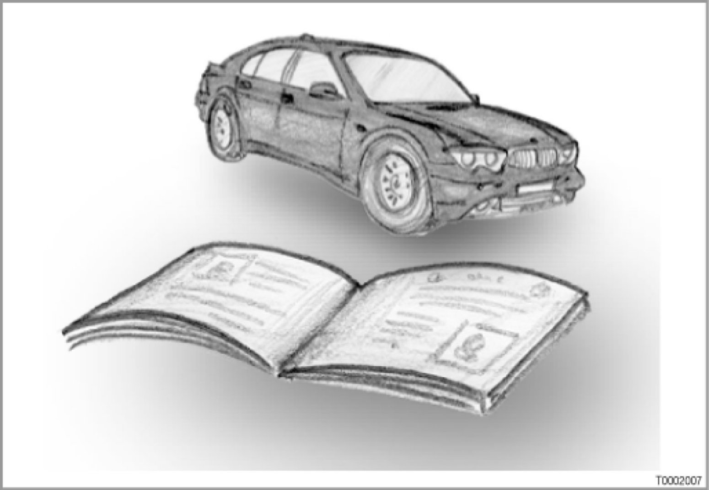

Introduction
BMW Service Technology Glossary: Introduction, Numbers and Characters

Content of this Glossary
This glossary is an automatic export from the VS terminology database: http://termservice.muc
This terminology database contains agreed expressions that have been checked and approved as regards terminology and content from the areas of diagnosis, repair instructions as well as technical vehicle documentation.
The following glossary contains almost 800 short forms from the field of
BMW Service Technology.
The short forms consist of:
- Abbreviations of words, e.g. "SMG" for sequential manual transmission
- Acronyms (acronyms are composed of the first letters of a number of words, e.g. "ADAC" for "Allgemeiner Deutscher Automobil-Club")
- Proper names (e.g. company names)
- Trade names
Note:
DWA, EDC etc. are in a separate directory.
For the sake of clarity, the abbreviations for control units have been exported into a separate glossary. e.g. DWA, EDC, etc.
These short forms are valid for both the system and the control unit.
Short form, long form, usage and main group
To enable better understanding, this glossary has been supplemented to include the following columns:
- "Usage": The text in this column indicates the context in which the expression is used.
- "KoGr": This column contains the main group of the acronym or long form.
An overview of the main groups can be found at the end.
Main Groups
Note:
Texts in the column "Usage".
Most of the texts in the column "Usage" originate from texts that have already been published.
It would be desirable always to place a definition of the short form or long form under "Usage". However, it involves a great deal of effort and costs to create or find definitions. This is why the existing texts have only been revised and supplemented to illustrate the usage of the short form.
Note:
Expressions without main group.
Some short forms and expressions are not assigned to any particular main group.
In the case of these short forms, the column "KoGr" contains only "--".
Note:
Short form and long form
The terminology database http://termservice.muc contains a designation of the system or component in long form.
Example: Short form "LDR", long form "Photoresistor".
The origin of the short form is located in the column "Usage" (for this example:
LDR = "Light Dependent Resistor).
Reason: This glossary is an automatic export from the terminology database. The terminology database is structured for user orientation in short form and meaning.
The origin of a short form is not quite as important as the meaning of the short form:
If there is a short form in a block diagram, the meaning is expected in the key
(i.e. the designation of the system or of the component in the relevant language).
Sorting of this Glossary
The glossary is alphabetically sorted.
Short forms with characters and numbers come first, followed by the short forms from A to Z.